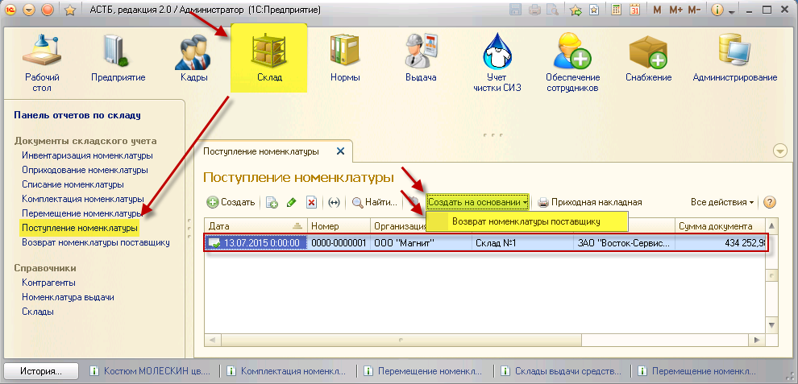
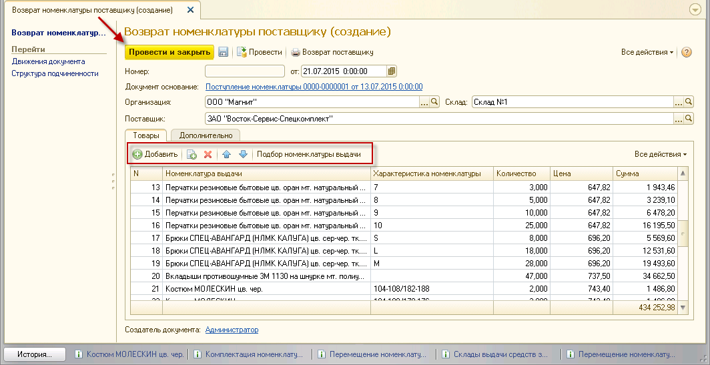
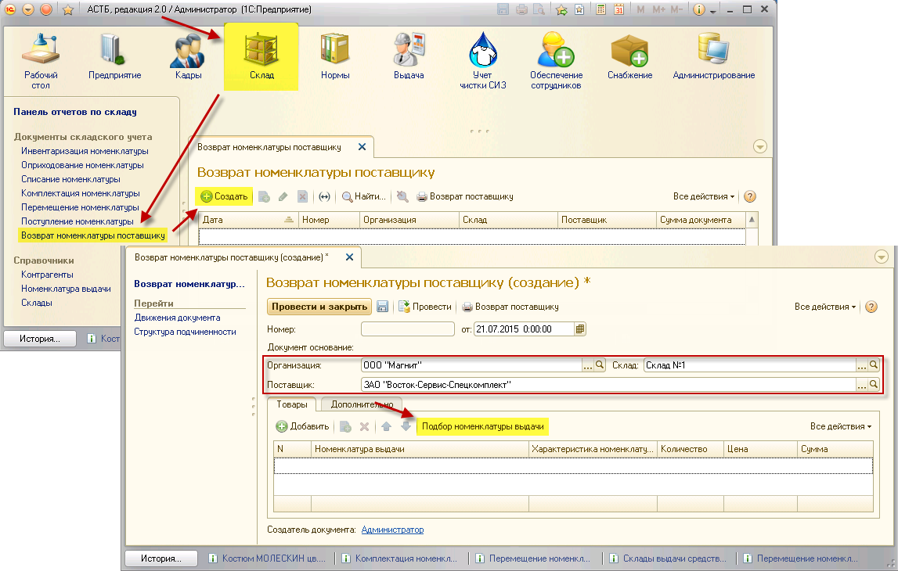

Возврат номенклатуры поставщику может быть осуществлен на основании документа «Поступление номенклатуры», а также при помощи ручного подбора номенклатуры.
Документ списания может быть создан на основании документа поступления номенклатуры. Для этого зайдите в раздел «Склад», документ «Поступление номенклатуры». Из списка выберите нужный документ по дате его формирования и выделите его нажатием. Затем нажмите кнопку «Создать на основании», пункт «Возврат номенклатуры поставщику».

После этого откроется окно «Возврат номенклатуры поставщику (создание)» с заполненной табличной частью в соответствии с документом поступления. С помощью кнопок командной панели отберите нужную номенклатуру:
 – Создать новый элемент копированием предыдущего;
– Создать новый элемент копированием предыдущего;
– Удалить текущий элемент;
 – Переместить текущий элемент вверх;
– Переместить текущий элемент вверх;
 – Переместить текущий элемент вниз.
– Переместить текущий элемент вниз.

Когда список будет сформирован, нажмите кнопку «Провести и закрыть».
Для ручного создания документа возврата номенклатуры поставщику перейдите в раздел «Склад», документ «Возврат номенклатуры поставщику», нажмите кнопку «Создать». В открывшемся окне выберете организацию, склад, с которого будет возвращен товар, и поставщика. Затем нажмите кнопку «Подбор номенклатуры выдачи».

Откроется соответствующее окно. В нем нажатием выберите папку «Номенклатура выдачи» и проставьте флажок «Только в наличии на складе» напротив нужного склада. Затем выберите номенклатуру для возврата поставщику, ее характеристику и, удерживая левую кнопку мыши, перетащите ее в окно данных для переноса в документ. После переноса укажите количество товаров, которые будут возвращены. Затем нажмите кнопку «Перенести в документ».

Затем в окне «Возврат номенклатуры поставщику (создание)» нажмите кнопку «Провести и закрыть».